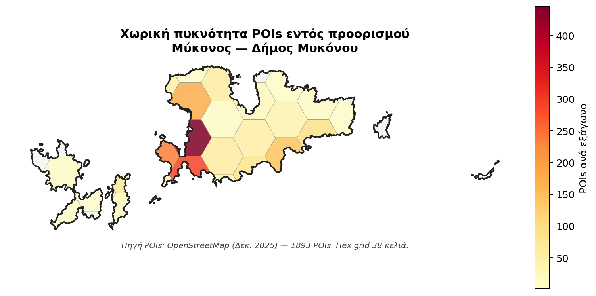

Σύνοψη Διοίκησης
Η Μύκονος είναι ο μοναδικός προορισμός σε καθεστώς πραγματικού υπερκορεσμού: 1,58 κλίνες ανά κάτοικο — μία από τις υψηλότερες αναλογίες στην Ευρώπη — και Δείκτης Τουριστικής Έντασης 178,6, υπερβαίνοντας 11,9 φορές το όριο επείγουσας παρέμβασης. Είναι ταυτόχρονα ο μοναδικός ώριμος που δεν έχει ξεπεράσει την προ-πανδημική ζήτηση (ανάκαμψη 0,878 — σήμα στασιμότητας κατά Butler) και η κοινωνία είναι έντονα πολωμένη (παράλληλα 21% Επιφυλακτικοί κάτοικοι + 28% Ένθερμοι Υποστηρικτές). Συνδυάζει εξαιρετικό ADR (>600€) με συσσωρευμένη κοινωνική αντίδραση. Στρατηγική προτεραιότητα: διαχείριση όγκου, visitor caps, «πράσινο τέλος», διαφοροποίηση κοινού.
Τι σημαίνει πρακτικά
Η Μύκονος δεν είναι πρόβλημα τουριστικής ζήτησης — είναι πρόβλημα διαχείρισης όγκου, χρήσεων γης, κοινωνικής ανοχής και περιβαλλοντικής επιβάρυνσης. Δεν χρειάζεται άλλη αύξηση όγκου· χρειάζεται διαχείριση κορύφωσης, έλεγχος χρήσεων, όρια επισκεψιμότητας στις ώρες αιχμής, και ειδικό περιβαλλοντικό τέλος υπέρ δημοτικών υποδομών.
Ενότητα 01
Επισκόπηση
Δεκαέξι δείκτες-κλειδιά που τοποθετούν τη Μύκονο σε προχωρημένη φάση Butler TALC stagnation: ο μοναδικός ώριμος προορισμός με δείκτη ανάκαμψης 2024/2019 κάτω της μονάδας (0,878), ακραίο TII 178,6 σε Δήμο 10.704 κατοίκων, διπολική κοινωνική στάση 21,2% «Επιφυλακτικοί κάτοικοι» (Αντιπαλότητα) + 27,8% «Ένθερμοι Υποστηρικτές» (Καθαρή Ευφορία) — η Μύκονος ζει σε διεθνή κατηγορία μαζί με Βενετία, Ντουμπρόβνικ και Σαντορίνη.
Στρατηγική σύνοψη
Ώριμος νησιωτικός προορισμός σε καθεστώς υπερκορεσμού — απαιτείται διαχείριση όγκου, όχι ανάπτυξη.
Η Μύκονος είναι ο μοναδικός προορισμός της δεκάδας σε πραγματικό υπερκορεσμό: 557.339 αφίξεις το 2024 (90,2% αλλοδαποί), TII Δήμου 178,6 (11,9× πάνω από το όριο επείγουσας παρέμβασης Saveriades), και 1,58 κλίνες ανά κάτοικο — η υψηλότερη αναλογία στην Ευρώπη. Σε όλη τη δεκαετία η αύξηση κλινών ξεπέρασε την αύξηση πληθυσμού 4,3× — μη-αναστρέψιμη διαρθρωτική αλλαγή. Παράλληλα, η ανάκαμψη αλλοδαπών αφίξεων 2024/2019 είναι 0,878, δηλαδή δεν έχει επανέλθει στα προ-πανδημικά επίπεδα — ένδειξη πιθανής στασιμότητας Butler.
Η οικονομική επίδοση παραμένει ακραία: ADR >600 €/βραδιά (η υψηλότερη της χώρας), 28:1 αναλογία STR listings προς ξενοδοχειακές μονάδες, εποχικότητα Gini 0,512 (57,4% διανυκτερεύσεων σε 3 θερινούς μήνες). Η Δήλος — UNESCO World Heritage Site από 1990, ο πιο σημαντικός ιερός πολιτισμικός χώρος της Μεσογείου — επισκέπτεται από λιγότερους από 22% των τουριστών της Μυκόνου. Σύστημα χωρικής διαχείρισης παραλιών, λιμενικής ροής κρουαζιερόπλοιων, και έλεγχος χρήσεων γης πρακτικά απουσιάζουν.
Η κοινωνία της Μυκόνου είναι έντονα πολωμένη: 21,2% κατοίκων σε LCA «Επιφυλακτικοί κάτοικοι» (Αντιπαλότητα) — παράλληλα 27,8% σε «Ένθερμοι Υποστηρικτές» (Καθαρή Ευφορία). Δύο ομάδες με ριζικά διαφορετική στάση συνυπάρχουν στον ίδιο μικρό Δήμο. Προτεραιότητες: διαχείριση όγκου επισκεπτών, όρια επισκεψιμότητας σε ζώνες και ώρες αιχμής, «πράσινο τέλος» υπέρ δημοτικών/περιβαλλοντικών υποδομών, διαφοροποίηση κοινού (μετάβαση από mass-luxury σε ποιοτικά segments), και ένταξη της Δήλου σε υποχρεωτικά πολιτισμικά πακέτα.
Χωρική Ανάλυση
Χωρική απεικόνιση
Πού βρίσκεται ο προορισμός στον εθνικό χάρτη πίεσης-ικανοποίησης, και πώς κατανέμεται η σχέση κατοίκου-τουρισμού εντός του.
Σχήμα · Χωρική ανάλυση εντός προορισμού
Δήμος Μυκόνου — POI χωρική πυκνότητα

Χωρική πυκνότητα σημείων τουριστικού ενδιαφέροντος (POIs OpenStreetMap) σε hex-grid εντός των ορίων του Δήμου. Πορτοκαλί ένταση δηλώνει υψηλότερη χωρική συγκέντρωση τουριστικής υποδομής.
Συγκριτικό · Αντικειμενική × Υποκειμενική πίεση
Θέση στον bivariate χάρτη TFI × Ικανοποίηση κατοίκων

Συνδυασμός αντικειμενικού δείκτη φέρουσας ικανότητας (TFI Defert 2024) και υποκειμενικής ικανοποίησης κατοίκων (Q9_SAT) σε ένα δι-διαστάσιμο choropleth. Τέσσερις διακριτές καταστάσεις προορισμού.
Ενότητα 02
Ζήτηση & Προσφορά
Δεκατέσσερα έτη εξέλιξης ζήτησης (2010–2024), ξενοδοχειακό δυναμικό 16.921 κλινών, αγορά βραχυχρόνιας μίσθωσης που έχει φτάσει ένα τέταρτο των διανυκτερεύσεων.
Σχήμα 6.1 · Αφίξεις 2010–2024
Διπολική δυναμική: εκρηκτική διεθνής επέκταση, στάσιμη εγχώρια κατανάλωση
Πηγή: ΕΛΣΤΑΤ STO12 T03 (αφίξεις σε ξενοδοχειακά καταλύματα). 90,2% αλλοδαποί επισκέπτες το 2024.
Σχήμα 6.2 · Δείκτης ανάκαμψης 2024/2019
Recovery 0,878 — μοναδικός ώριμος που δεν επανέφερε προ-πανδημικά επίπεδα (Butler stasis)
Σύγκριση 10 προορισμών. Λόγος >1 σημαίνει ξεπέρασε την ανάκαμψη.
Σχήμα 6.3 · Μηνιαία κατανομή 2024
Συγκέντρωση 4 μηνών αιχμής (Ιουν–Σεπ): 68,6% αφίξεων
Πορτοκαλί = αιχμή · σκούρο μπλε = ώμος · ανοιχτό μπλε = χαμηλή. ΕΛΣΤΑΤ STO12 T13.
Σχήμα 6.4 · Εποχικότητα: Συντελεστής Gini
Σταθερή υψηλή εποχικότητα την τελευταία δεκαετία
Gini=0 τέλεια κατανομή · Gini=1 πλήρης συγκέντρωση. Τιμές 0,46–0,50 = υψηλή εποχικότητα.
Σχήμα 6.6 · Ξενοδοχειακή δυναμικότητα 2015–2024
Κλίνες +18,8% σε δεκαετία — μονάδες +9%
ΕΛΣΤΑΤ STO12 T01. Νέες κλίνες κυρίως σε υπάρχουσες μονάδες (επεκτάσεις).
Σχήμα 6.5 · Δωμάτια ανά κατηγορία αστεριών (2024)
Κυριαρχία 2* (31,2%) και 4* (24,5%)
5* μόλις 19,6% — premium positioning ακόμη υπό-αντιπροσωπευμένο.
Σχήμα 6.7 · Μηνιαίο ποσοστό πληρότητας 2024
Αιχμή Αυγούστου 86% — Φεβρουάριος μόλις 4%
Περιφέρεια Κρήτης (NUTS2). Ευρείες ζώνες αξιοποίησης σε Απρ–Μαϊ και Οκτ.
Σχήμα 6.8 · Μέση διάρκεια παραμονής (ALoS)
Μείωση −1 ημέρα σε δεκαετία (από 6,4 σε 5,4)
Σταθερή πτωτική τάση — πιθανή σύνδεση με αύξηση short-haul / city-break τουρισμού.
Σχήμα 6.9 · Μερίδιο STR έναντι ξενοδοχείων (2020–2024)
Από 20% σε 28% αφίξεων μέσα σε 4 χρόνια — ταχύτατη μετατόπιση
Αφίξεις
Διανυκτερεύσεις
AirDNA / Inside Airbnb (booked listings). 24,8% μερίδιο διανυκτερεύσεων = υψηλότερο των 10 προορισμών.
Ενότητα 03
Τουριστικό προϊόν
Από 1.941 σημεία τουριστικού ενδιαφέροντος μέχρι την αξιολόγηση 15 διακριτών υποδομών από τους κατοίκους — η αξιολόγηση «τι λειτουργεί καλά» στον προορισμό.
Σχήμα 6.10 · Σημεία Τουριστικού Ενδιαφέροντος (POIs OSM)
1.941 POIs · κορυφαία πυκνότητα 22,7 POIs/km² των 10 προορισμών
OpenStreetMap Overpass API, εξαγωγή 2025. Κατηγορίες: παραλίες, μουσεία, εστίαση, καταλύματα, αξιοθέατα.
Σχήμα 6.11 · IPA Quadrant — Σπουδαιότητα × Αξιολόγηση υποδομών
Δημ. Υγεία και Ύδρευση στο τεταρτημόριο «Συγκέντρωση εδώ»
Τι δείχνει αυτό το γράφημα; (πλήρης οδηγός)
Το IPA Quadrant (Importance-Performance Analysis, Martilla & James 1977) είναι στρατηγικό εργαλείο που μας λέει τι να κάνουμε για κάθε υποδομή. Είναι 2-διαστάσιμο: κάθε υποδομή τοποθετείται με βάση πόσο σημαντική είναι (οριζόντιος άξονας) και πόσο καλά λειτουργεί (κάθετος άξονας).
Άξονας x — Σχετική Σπουδαιότητα (0-1): Δείχνει πόσο η αξιολόγηση μιας υποδομής εξηγεί τη συνολική ικανοποίηση των κατοίκων. Παράγεται από Random Forest μοντέλο. Τιμή 0,30 ≈ η υποδομή αυτή είναι ένας από τους κύριους «προσδιοριστές» της ικανοποίησης. Τιμή 0,10 ≈ μικρή στατιστική σύνδεση με τη συνολική ικανοποίηση.
Άξονας y — Μέση Αξιολόγηση Κατοίκων (1-5): Πόσο καλά οι κάτοικοι αξιολογούν αυτή την υποδομή. 5 = εξαιρετική, 1 = πολύ ανεπαρκής, 3 = μέτρια.
Δύο διακεκομμένες γραμμές διαχωρίζουν το γράφημα στα 4 τεταρτημόρια πάνω στις διάμεσες τιμές. Κάθε τεταρτημόριο = διαφορετική στρατηγική προτεραιότητα:
- Συγκέντρωση εδώ (κάτω-δεξιά): υψηλή σπουδαιότητα + χαμηλή αξιολόγηση. ΚΡΙΣΙΜΗ ΠΑΡΕΜΒΑΣΗ ΕΔΩ. Υποδομές που οι κάτοικοι κρίνουν σημαντικές αλλά λειτουργούν κακά.
- Διατήρηση καλής επίδοσης (πάνω-δεξιά): υψηλή σπουδαιότητα + υψηλή αξιολόγηση. Συνεχίστε όπως είναι — μην αλλάξετε αυτά που λειτουργούν.
- Χαμηλή προτεραιότητα (κάτω-αριστερά): χαμηλή σπουδαιότητα + χαμηλή αξιολόγηση. Λειτουργούν μέτρια, αλλά δεν επηρεάζουν πολύ τη συνολική ικανοποίηση. Δευτερεύουσα προτεραιότητα.
- Πιθανή υπερβολή (πάνω-αριστερά): χαμηλή σπουδαιότητα + υψηλή αξιολόγηση. Λειτουργούν εξαιρετικά αλλά οι κάτοικοι δεν τις θεωρούν κρίσιμες. Πιθανώς υπερ-επένδυση.
Παράδειγμα: πώς να διαβάσετε ένα σημείο
Έστω ότι μια υποδομή Α έχει συντεταγμένες (0,28 · 2,5). Σημαίνει: η σπουδαιότητά της είναι 0,28 (πάνω από μέσο όρο των υπολοίπων), αλλά η αξιολόγησή της 2,5/5 (κάτω από μέσο όρο). Πέφτει στο τεταρτημόριο «Συγκέντρωση εδώ» — δηλαδή είναι κρίσιμη ανάγκη παρέμβασης.
⚠ Παράδοξο: «Σπουδαιότητα» ≠ διαισθητική σημασία
Η Σπουδαιότητα στο IPA δεν είναι αυτό που πιστεύουν οι κάτοικοι ότι είναι σημαντικό, αλλά αυτό που στατιστικά εξηγεί την ικανοποίησή τους. Παράδειγμα: αν η Στάθμευση είναι χρόνια κακή σε έναν προορισμό, οι κάτοικοι την έχουν «παραιτηθεί» — δεν τη συνδέουν με την ικανοποίησή τους πια. Έτσι το Random Forest της δίνει χαμηλό βάρος και φαίνεται «χαμηλή προτεραιότητα» — αν και διαισθητικά είναι κρίσιμη. Διαβάστε προσεκτικά.
Σπουδαιότητα = εξαγόμενο βάρος Random Forest (πόσο η υποδομή εξηγεί τη γενική ικανοποίηση), όχι δηλωτική σημασία. Αξιολόγηση = μέση τιμή σε κλίμακα 1-5. Πορτοκαλί αριθμοί = Τουριστικές υποδομές · Σκούρο μπλε = Δημόσιες υποδομές. Ο πίνακας από κάτω ταξινομεί τις 15 υποδομές κατά Σπουδαιότητα.
Σχήμα 6.10β · Gap Analysis Ζήτησης / Προσφοράς, ΠΕ Μυκόνου
Τέσσερα κρίσιμα κενά τουριστικού μοντέλου
Σύνθεση ποσοτικής έρευνας κατοίκων (n=300), ποιοτικής έρευνας στελεχών (n=5) και δευτερογενών δεδομένων. Κάθε κενό αξιολογείται από τη συνδυαστική σοβαρότητα (έκταση + αντίκτυπος) και αντιστοιχεί σε μία στρατηγική Πρόταση του master plan.
Συγκέντρωση 3 θερινών μηνών
0,512
συντελεστής Gini εποχικότητας — από τους υψηλότερους της δεκάδας
Ο συντελεστής Gini εποχικότητας 0,512 σημαίνει ότι το 57,4% των διανυκτερεύσεων συγκεντρώνεται στους 3 θερινούς μήνες (Ιούλιος-Σεπτέμβριος), ενώ μόλις το 2,7% πέφτει σε Δεκέμβριο-Φεβρουάριο. Με μέση τιμή δωματίου (ADR) 750€/βραδιά και αδρανείς υποδομές 7,5 μήνες/έτος, το lost revenue υπολογίζεται σε ~130 εκ. € ετησίως. Η Μύκονος δεν έχει υιοθετήσει στρατηγικά χειμερινό positioning, παρά την υποδομή 5-στέρων που θα μπορούσε να υποστηρίξει wellness/conferences/exclusive events έξω από αιχμή.
Πρακτικά: χειμερινό positioning σε exclusive segments (wellness retreat / private event venue) — προσθήκη 2 μηνών μπορεί να δικαιολογήσει 50-70 εκ. € πρόσθετα.
Όλη η ζήτηση σε 8 παραλίες
80%
τουριστικής δραστηριότητας σε 8 παραλίες της Νοτιοδυτικής ακτής
Οι 8 διάσημες παραλίες της Νοτιοδυτικής ακτής (Παράγκα, Παράδεισος, Super Paradise, Ψαρού, Πλατύς Γιαλός, Ορνός, Αγρανί, Άγιος Ιωάννης) απορροφούν το 80% της τουριστικής δραστηριότητας. Η Άνω Μερά (μεσογειακό χωριό, παραγωγή τυριών/κρασιού) και η ανατολική ακτή (Καλάφατι, Φωκός, Άγιος Σώστης — αμμώδεις, ησυχότερες) λειτουργούν εκτός των κύριων ροών παρά τη φυσική ομορφιά. Στρατηγικό περιθώριο εσωτερικής επανακατανομής μέσω βελτιωμένης διασύνδεσης + storytelling.
Πρακτικά: shuttle network 12-shuttle/ώρα Χώρα → Άνω Μερά + ανατολική ακτή + agritourism cluster ως «slow Mykonos» counter-program.
UNESCO Δήλος επισκέπτεται λιγότερο από 1/5
<22%
τουριστών επισκέπτονται UNESCO Δήλο — λιγότερο από 1 στους 5
Λιγότεροι από 22% των τουριστών της Μυκόνου επισκέπτονται τη Δήλο — UNESCO World Heritage Site από το 1990, ιερό νησί του Απόλλωνα, ένας από τους πιο πλούσιους αρχαιολογικούς χώρους της Μεσογείου. 80-120 χιλιάδες επισκέπτες ετησίως έναντι 557 χιλιάδων ξενοδοχειακών αφίξεων στη Μύκονο. Ένα μνημείο διεθνούς εμβέλειας λειτουργεί ως ad-hoc εκδρομή, όχι ως πυλώνας πολιτισμικής εμπειρίας. Η Δήλος μπορεί να υποδεχθεί ασφαλώς 200-250 χιλιάδες ετησίως, οπότε υπάρχει σημαντικό περιθώριο ανάπτυξης χωρίς κορεσμό.
Πρακτικά: integrated «Mykonos-Delos» πακέτα + πολιτισμικό marketing στους ξενοδοχειακούς partners + νυκτερινές περιηγήσεις Δήλου (εκτός αιχμής).
Διπλό ρυθμιστικό κενό
28 : 1
STR listings ανά ξενοδοχειακή μονάδα — εκτός ελέγχου · cap κρουαζιέρας μηδενικό
Η αναλογία STR listings προς ξενοδοχειακές μονάδες είναι 28 προς 1 — δηλαδή για κάθε ξενοδοχείο υπάρχουν 28 listings βραχυχρόνιας μίσθωσης. Δεν υπάρχει καμία οροθέτηση listings ανά Δημοτική Ενότητα, ούτε καπ ως ποσοστό μόνιμης κατοικίας. Παράλληλα, το λιμάνι της Μυκόνου δεν έχει στρατηγική διαχείριση κρουαζιερόπλοιων: συχνά 3-4 πλοία δένουν την ίδια ημέρα, ενώ η Χώρα δεν μπορεί να υποδεχθεί ταυτόχρονα 12.000+ επισκέπτες με ποιότητα εμπειρίας. Δύο ρυθμιστικά κενά στην ίδια χωρική κλίμακα.
Πρακτικά: συνδυασμός: STR cap ανά Δ.Ε. + κρουαζιέρα schedule slot reservation + green levy 5-10€/επισκέπτη υπέρ δημοτικών υποδομών.
Πηγές: Πρωτογενής ποσοτική έρευνα κατοίκων Δήμου Μυκόνου (n=300)· ΕΛΣΤΑΤ STO12· AirDNA. Η Μύκονος συνδυάζει ακραία αντικειμενική πίεση (TII 178,6 σε Δήμο = 11,9× το όριο υπερκορεσμού Saveriades) με Butler stasis (recovery 0,878) — μοναδική περίπτωση που απαιτεί όχι ανάπτυξη αλλά διαχείριση όγκου.
Ενότητα 04
Οικονομία
37% της Ακαθάριστης Προστιθέμενης Αξίας προέρχεται από τομείς G-I (Εμπόριο, Μεταφορές, Τουρισμός). Σχεδόν ένας στους δύο κατοίκους εμπλέκεται οικονομικά στον τουρισμό.
Σχήμα 6.12 · Εκτιμώμενος τζίρος καταλυμάτων
Ξενοδοχεία 618 εκ. € · STR 265 εκ. € (2024)
Εκτίμηση: hotel = διανυκτ. × €85 · STR = διανυκτ. × €110 (premium pricing).
Σχήμα 6.13 · ΑΠΑ G-I έναντι σύνολο
Ανάκαμψη +37% post-COVID (2020 → 2023)
ΕΛΣΤΑΤ National Accounts. G-I = NACE κλάδοι Εμπόριο, Μεταφορές, Τουρισμός.
Σχήμα 6.13β · Στρατηγικό τεταρτημόριο: Οικονομική εξάρτηση × Ικανοποίηση
Μύκονος στη ζώνη «Έντονη οικονομική εξάρτηση + διπολική στάση» — υψηλή Q15 + πολωμένη Q9_SAT
Πρωτογενής έρευνα κατοίκων (n_total ~3.000), σταθμισμένα ποσοστά Q15 και μέση δήλωση γενικής ικανοποίησης.
Σχήμα 6.14 · Νέες οικοδομικές άδειες & κατοικίες (2015–2025)
+224% σε δεκαετία — έκρηξη 2024 (515 άδειες)
ΕΛΣΤΑΤ SOP03. Γκρι 2025 = προσωρινά. Πρόκειται για το ισχυρότερο μέγεθος πίεσης πάνω στο φυσικό απόθεμα.
Ενότητα 05
Κοινωνία
Φέρουσα ικανότητα, ποιότητα ζωής, στεγαστική κρίση από βραχυχρόνια μίσθωση, κοινωνική στάση κατοίκων μέσω Doxey Irridex και Latent Class Analysis.
Μεθοδολογικό κουτί 6.5.1.α — Γιατί χρησιμοποιούμε Defert TFI/TII
Ο γαλλικός γεωγράφος Pierre Defert εισήγαγε τον TFI το 1967 ως πρώτη συστηματική ποσοτικοποίηση τουριστικής λειτουργίας: TFI = κλίνες/πληθυσμός × 100. Ο TII είναι μεταγενέστερη επέκταση που μετρά διανυκτερεύσεις/πληθυσμό × 100. Τα απόλυτα νούμερα δεν λένε αν ένας προορισμός είναι «μικρός υπερβολικά τουριστικός» ή «μεγάλος ισορροπημένος» — οι Defert δείκτες αναγάγουν την κλίμακα. Διεθνή κατώφλια ζώνης (Saveriades 2000, Coccossis & Mexa 2004): TII < 5 χαμηλή πίεση, 5–10 μέτρια, 10–15 υψηλή, >15 πολύ υψηλή. Η Μύκονος: TII 178,6 (Δήμος Μυκόνου) — 11,9× πάνω από κατώφλι Saveriades για υπερκορεσμό. Δομικά extreme.
Σχήμα 6.15 · Δείκτης Τουριστικής Έντασης (TII) Defert 2010–2024
Από 3,78 σε 8,67 — υπερδιπλασιασμός σε 14 έτη
Διανυκτερεύσεις / κάτοικο × 100. Όριο υπερκορεσμού (Defert) στη γραμμή TII = 10.
Σχήμα 6.15γ · Στρατηγικό τεταρτημόριο: Αντικειμενική × Υποκειμενική πίεση
Μύκονος στη ζώνη «Saturated & Aware» (TFI 158,1 · POI θ +0,48)
POI θ μέσω IRT-GRM. TFI σε log10 για visual ισοκατανομή.
Σχήμα 6.16γ · Στρατηγικό τεταρτημόριο: Στεγαστική κρίση από STR
57,0% αναγνωρίζει STR στεγαστική επίδραση — υψηλό, με 28:1 αναλογία STR:hotels
Πρωτογενής έρευνα Q3_7 (διαθεσιμότητα κατοικιών) × δήλωση «πρόβλημα στέγης» (πρόβλημα στέγης μόνιμων).
Σχήμα 6.16 · Doxey Irridex Heatmap — 5 ώριμοι προορισμοί
Μύκονος: εκτεταμένη Στεγαστική επίδραση + ευρεία αναγνώριση κορεσμού σε σχέση με όλους τους ώριμους
Πρωτογενής έρευνα Q1 — μέσες τιμές κλίμακας 1–5. Πράσινο = θετικό, κόκκινο = αρνητικό.
Μεθοδολογικό κουτί 6.5.3.β — Γιατί χρησιμοποιούμε LCA
Η Latent Class Analysis (Lazarsfeld & Henry, 1968 · Hagenaars & McCutcheon, 2002) ομαδοποιεί στατιστικά τους ερωτηθέντες σε εμπειρικά εμφανιζόμενες τυπολογίες, αποκαλύπτοντας υπόρρητους «τύπους κατοίκων» που δεν θα ξεχώριζαν από απλή περιγραφική στατιστική. Σε αντίθεση με a-priori cluster analysis, η LCA εκτιμά πιθανότητες ανάθεσης κάθε ατόμου σε κάθε class με βάση το συνολικό προφίλ απαντήσεων στις 12 διαστάσεις Q1 (Doxey items). Επιλέγουμε 5 classes με βάση BIC + interpretability (LMR-LRT p < 0,01 για k=4 vs k=5· stable improvement σταματά μετά k=5). Τα 5 classes ταιριάζουν με τη Doxey τυπολογία: Δυσαρεστημένοι ↔ Antagonism, Επιφυλακτικοί ↔ Annoyance, Πραγματιστές ↔ Apathy/transitional, Υποστηρικτές ↔ Mild euphoria, Ένθερμοι ↔ Pure euphoria.
Σχήμα 6.17 · Latent Class Analysis — 10 προορισμοί
Μύκονος: διπολική κατανομή με 27,8% C5 + 21,2% C1 — πολωμένη κοινωνία
Σταθμισμένο μερίδιο πληθυσμού ανά εμπειρική class. Ταξινόμηση κατά δήλωση γενικής ικανοποίησης ικανοποίηση (αύξουσα).
Σχήμα 6.17β · Τεταρτημόριο πόλωσης: Class 1 × Class 5
Μύκονος στο τεταρτημόριο «Διπολική κοινωνία» (21,2% × 27,8%)
Υψηλό Class 1 + χαμηλό Class 5 = προειδοποιητικό σήμα κοινωνικής φθοράς.
Ποιοτική έρευνα · 23 αυτούσια αποσπάσματα
Φωνές των στελεχών
Ενότητα 06
Περιβάλλον
100% εξαιρετική ποιότητα υδάτων κολύμβησης. Δομικά ευάλωτο νησιωτικό οικοσύστημα: άνυδρο, με υψηλή πίεση υδροφόρου τη θερινή αιχμή. Δήλος-Ρήνεια Natura 2000 — Δήμος Μυκόνου χωρίς Γαλάζια Σημαία.
Δήμος Μυκόνου · Χωρικά χαρακτηριστικά
Δήμος 105,2 km² · 16.921 κλίνες σε 10.704 κατοίκους — 1,58 κλίνες/κάτοικο (υψηλότερη Ευρώπη)
Η Μύκονος είναι ένα από τα μικρότερα νησιά των Κυκλάδων σε έκταση (105,2 km²), αλλά συγκεντρώνει υπερβολική ανάπτυξη τουριστικών υποδομών για το μέγεθος της. Η αναλογία κλινών ανά μόνιμο κάτοικο (1,58:1) είναι από τις υψηλότερες στην Ευρώπη και αντανακλά τη δομική υπερβολή. Λείπουν Eurostat NUTS2 EL42 land cover data σε επίπεδο νησιού — Cyclades aggregate δεν αντανακλά Μύκονο.
Census 2021 (πληθυσμός) · ΕΛΣΤΑΤ STO12 T01 (κλίνες) · Επιφάνεια Δήμου Μυκόνου: επίσημα κτηματολογικά στοιχεία.
Eurostat sdg_06_60 · Greek WEI+ 2003–2023
Ανοδική πορεία — από 11,5 σε 12,5 σε δεκαετία
4ετής μέσος όρος. Ζώνες: πράσινο <10 χαμηλή · κίτρινο 10-20 μέτρια · κόκκινο >20 έντονη.
Σχήμα 6.18 · Αντίληψη αρνητικών επιπτώσεων (% συμφωνώ + απόλυτα)
Μύκονος: 57% αναγνωρίζει STR επίδραση · διπολική κοινωνία 21% C1 vs 28% C5
Πρωτογενής έρευνα Q3+Q7. Σύγκριση 5 ώριμων προορισμών.
Ενότητα 07
Στρατηγική
SWOT ανάλυση, πέντε στρατηγικοί άξονες παρεμβάσεων, και επτά στοχευμένες προτάσεις πολιτικής βασισμένες στην πρωτογενή έρευνα κατοίκων.
SWOT Ανάλυση
Πέντε Στρατηγικοί Άξονες
Επτά Στοχευμένες Προτάσεις από την Πρωτογενή Έρευνα
Ενότητα 08
Δεδομένα & Παράρτημα
Πλήρης πρόσβαση στα 64 items της πρωτογενούς έρευνας, στους 19 πίνακες του κεφαλαίου, και στις 6 πηγές δευτερογενών δεδομένων.
Πρωτογενής έρευνα — Όλα τα 64 items
| Item | Μέσος (1–5) | % Συμφωνώ | n valid |
|---|
4 Μεθοδολογικά Κουτιά
Πηγές δεδομένων
Πηγαίες παρουσιάσεις πρωτογενούς έρευνας
Οι αυτούσιες παρουσιάσεις του φορέα δημοσκοπικής έρευνας με τα πλήρη ευρήματα ποσοτικής και ποιοτικής έρευνας στους κατοίκους και στα στελέχη του προορισμού. Διαθέσιμες ως PDF για μεταφόρτωση.